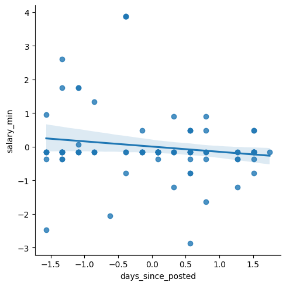
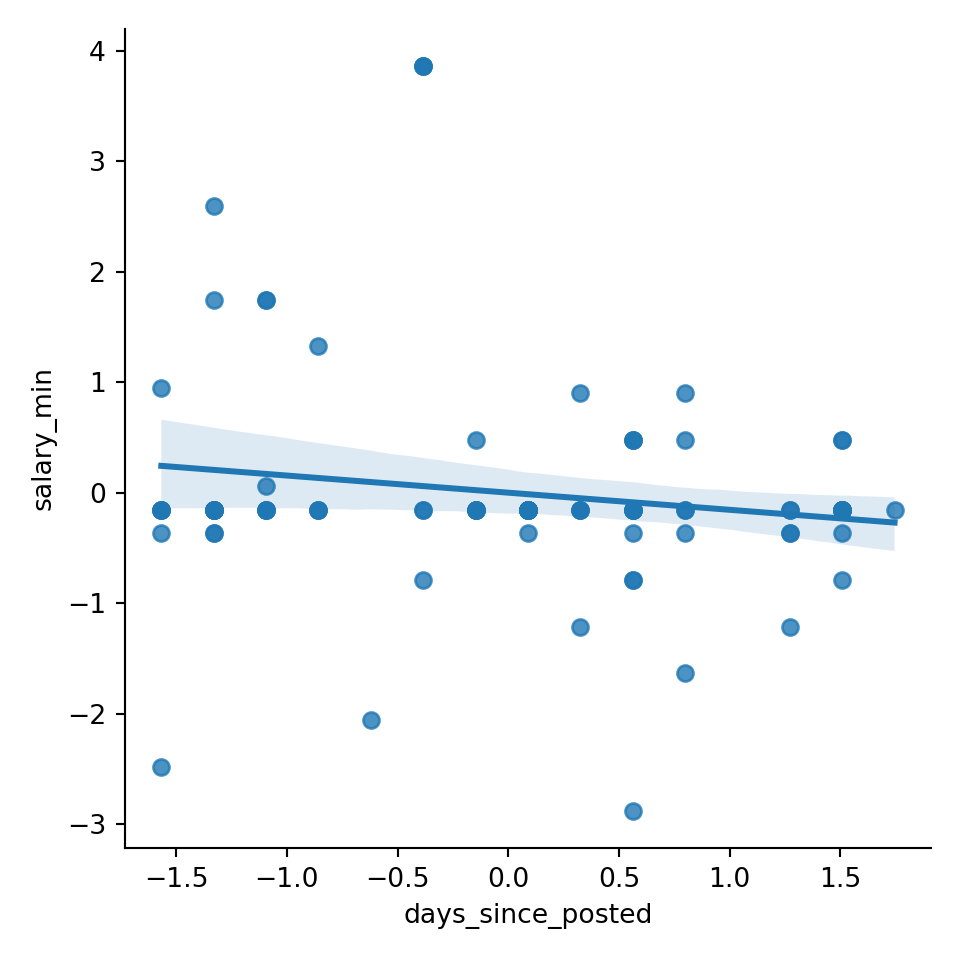
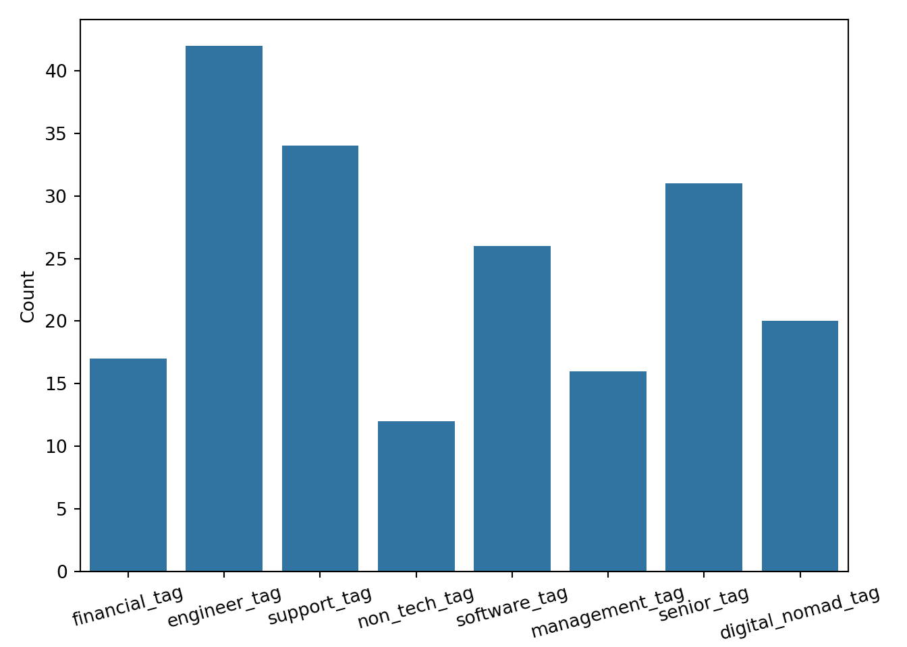
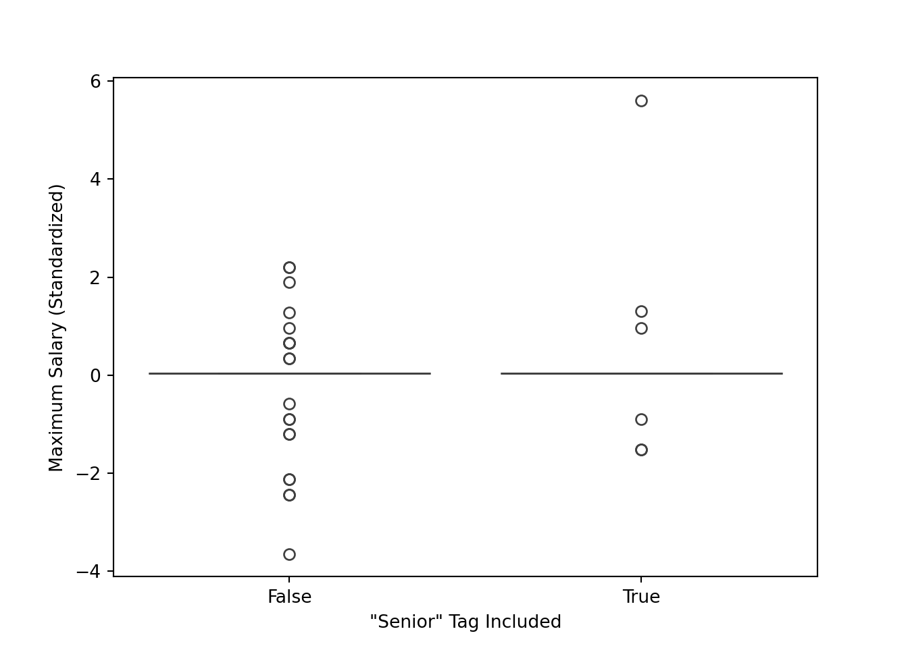

# Libraries
import requests, time, os, hashlib
from bs4 import BeautifulSoup
import pandas as pd
import json
import datetime as dt
from sklearn.preprocessing import StandardScaler
import matplotlib.pyplot as plt
import seaborn as sns
# Path
path = "~/Downloads/"Lab 3 – Web Scraping & Analysis
Setup
Libraries & Paths
Python
R
# Libraries
library(httr)
library(jsonlite)
library(readr)
library(dplyr)
# Path
path <- "~/Downloads/"A1. Plan & Count the Cost
Approach
After reviewing robots.txt, a few things are apparent. One, the “User-agent: *” that applies to everyone has no disallows. This means I do not have to worry bout which pages I am scraping. It does, however, include a “Crawl-delay: 1”, so I will have to implement a delay between requests.
Considerations
Upon reflection of Luke 14:28–30, it is clear to me that this wisdom can apply to all sorts of tasks. Evaluating a situation before acting upon it is always wise, especially with scraping. if I were to scrape a website without first reviewing limitations, researching the website, or making a plan, I would have no foundation to build upon. That creates tremendous future risk.
Biblical Application
I built in checks to notice erroneous requests to help maintain stability. For example, I used “if… exists” to only attempt to load an existing file. I used “raise_for_status” to check for the HTTP status code. Lastly, I used the “timeout” argument to make sure each request had an expiration.
A2. Configure & Initialize
Python
API_BASE = "https://remoteok.com/api"
HEADERS = {"User-Agent": "pjpope@liberty.edu"}
CACHE_DIR = "cache_py"
delay = 1
os.makedirs(CACHE_DIR, exist_ok=True)
def _cache(url: str, ext=".json"):
return os.path.join(CACHE_DIR, hashlib.sha1(url.encode()).hexdigest())R
path <- "~/Downloads/"
API_BASE <- "https://remoteok.com/api"
HEADERS <- "pjpope@liberty.edu"
CACHE_DIR <- "cache_r"
dir.create(CACHE_DIR, showWarnings = FALSE)Reasoning
Caching in concept is all about showing respect for the free resource that we are receiving. In many ways, it is not necessary, but it is used with a goal of efficiency in mind. The goal is to scrape the minimal number of times possible. Good stewardship involves never wasting. Caching helps to avoid waste.
A3. Fetch with Caching & Retries
Python
def fetch_json(url, delay=1):
fp = _cache(url, ".json")
if os.path.exists(fp):
return json.loads(open(fp, encoding="utf-8").read())
time.sleep(delay)
r = requests.get(url, headers=HEADERS, timeout=20)
r.raise_for_status()
open(fp, "w", encoding="utf-8").write(r.text)
return r.json()R
fetch_json <- function(url, delay=1) {
fp <- .cache(url)
if (file.exists(fp)) {
return(fromJSON(read_file(fp)))
}
Sys.sleep(delay)
res <- GET(url, user_agent(HEADERS))
stop_for_status(res)
json <- content(res, "text", encoding = "UTF-8")
write_file(json, fp)
return(fromJSON(json))
}Reflection
My first goal in selecting at least 5 relevant fields was to find a variety of data types. I was able to parse categorial, numeric, and date. My second goal was to parse as many numeric values as possible, considering the graphs required in the future. To be honest, many of the fields I considered to be unusable or irrelevant. I also included to “url” field because it was mentioned as a requirement for usage in the “Legal” part of the API.
A4. Parse & Type-Cast
Python
def parse_page(page=1, limit=2):
# fetch one api page
url = f"{API_BASE}?page={page}&limit={limit}"
data = fetch_json(url, delay=1)
jobs = data[1:] # everything after 1st item (legal)
rows = []
for j in jobs:
# fields
job_id = j.get("id")
date = j.get("date")
company = j.get("company")
position = j.get("position")
location = j.get("location")
salary_min = j.get("salary_min")
salary_max = j.get("salary_max")
page_url = j.get("url")
tags = j.get("tags")
tag_list = ""
for tag in tags:
tag_list += tag + ", "
# append
rows.append({
"id": job_id,
"date_posted": date,
"company": company,
"position": position,
"location": location,
"salary_min": salary_min,
"salary_max": salary_max,
"tag_list": tag_list,
"url": page_url
})
df = pd.DataFrame(rows)
# Casting
df['date_posted'] = pd.to_datetime(df['date_posted']).dt.tz_localize(None) # remove timezone for spans
# "Derive a recency metric"
df['days_since_posted'] = (dt.datetime.today() - df['date_posted']).dt.days
return dfR
parse_jobs <- function(page=1, limit=2) {
url <- paste0(API_BASE, "?page=", page)
data <- fetch_json(url) # brings in as DF
df <- data[-1, ] # everything after first element (legal)
# Casting
df$date <- as.Date(df$date)
df$tag_list <- sapply(df$tags, function(tags) paste(tags, collapse = ", "))
# "Derive a recency metric"
df$days_since_posted <- as.numeric(Sys.Date() - df$date)
# Removing unwanted columns
df$last_updated <- NULL
df$legal <- NULL
df$slug <- NULL
df$epoch <- NULL
df$epoch <- NULL
df$company_logo <- NULL
df$epoch <- NULL
df$tags <- NULL
df$epoch <- NULL
df$description <- NULL
df$apply_url <- NULL
df$original <- NULL
df$logo <- NULL
df$verified <- NULL
stopifnot(nrow(df) > 0)
df
}Reasoning
The field “tags” was easily the feature I spent the most time on. In the API, it is a list, so I initially ruled it out. Lists are not good for data frames, especially with a wide range of lengths. But then I noticed that the individual tags were not custom, they appeared to be coming from a premade pool of tags. I immediately realized how valuable the tags were as categorical data. So, I decided to make a new categorical feature called “tag_list” of type text, which was a single string with all tags separated by commas.
A5. Loop, Validate, & Aggregate
Python
def scrape_api(max_pages=1, limit=50):
frames = []
for p in range(1, max_pages + 1):
df = parse_page(page=p, limit=limit)
if df.empty:
break
df["source_page"] = p
frames.append(df)
return pd.concat(frames, ignore_index=True) if frames else pd.DataFrame()R
scrape_api <- function(max_pages = 1, delay = 1) {
df <- data.frame()
for (p in 1:max_pages) {
page <- parse_jobs(page=p)
stopifnot(length(page) > 0)
page$source_page <- p
df <- dplyr::bind_rows(df, page)
Sys.sleep(delay)
}
df
}Reasoning
In loop validations for critical when scraping multiple pages. As established earlier, wasting scrapes is to be avoided. Validation prevents empty scrapes, unnecessary scrapes, and erroneous scrapes. It helps to catch problems in the moment rather than after several pages. I structured my loop in a way that strongly promotes usability. Using a source page can help to trace problems. USing a function like parse_page makes the code more readable and modular.
B1. Cleanse & Feature Engineer
master = scrape_api(max_pages=1)
print("Fetched rows:", len(master))Fetched rows: 96master = master.drop_duplicates(keep='first')
print(master.duplicated().sum())0print(master.isnull().sum() / len(master))id 0.0
date_posted 0.0
company 0.0
position 0.0
location 0.0
salary_min 0.0
salary_max 0.0
tag_list 0.0
url 0.0
days_since_posted 0.0
source_page 0.0
dtype: float64Justification
There were no duplicate records found, but I used the “first” as my keep argument because it more recent posts are at the top, and if there were duplicates, I would want the more updated one.
# Location had empty strings not NULL
master['location'] = master['location'].replace('', 'Unspecified')
# Turn zeroes into NAs
master['salary_min'] = master['salary_min'].replace(0, pd.NA)
# impute median
master['salary_min'] = master['salary_min'].fillna(master['salary_min'].median())
master['salary_max'] = master['salary_max'].replace(0, pd.NA)
master['salary_max'] = master['salary_max'].fillna(master['salary_max'].median())
# Clean text field
master['position'] = master['position'].str.lower()B2. Categorical Encoding & Scaling
Categorical Encoding
# getting all tags
tags = []
for tag_list in master['tag_list']:
for tag in tag_list.split(', '):
tags.append(tag)
tags = pd.Series(tags)
print(tags.value_counts().head(20)) 96
engineer 36
support 33
senior 31
software 26
digital nomad 20
design 19
health 18
engineering 18
security 17
financial 17
technical 16
cloud 16
management 16
lead 15
operations 15
manager 14
growth 14
marketing 12
code 12
Name: count, dtype: int64# Creating encoded cols based on top tags
master['engineer_tag'] = master['tag_list'].str.contains('engineer|engineering')
master['senior_tag'] = master['tag_list'].str.contains('senior')
master['software_tag'] = master['tag_list'].str.contains('software')
master['financial_tag'] = master['tag_list'].str.contains('financial')
master['non_tech_tag'] = master['tag_list'].str.contains('non tech')
master['support_tag'] = master['tag_list'].str.contains('support')
master['digital_nomad_tag'] = master['tag_list'].str.contains('digital nomad')
master['management_tag'] = master['tag_list'].str.contains('management')
tag_cols = ['financial_tag', 'engineer_tag', 'support_tag', 'non_tech_tag',
'software_tag', 'management_tag', 'senior_tag', 'digital_nomad_tag']
master[tag_cols].head() financial_tag engineer_tag ... senior_tag digital_nomad_tag
0 False False ... False False
1 False False ... False False
2 False False ... True False
3 False False ... False False
4 False False ... False False
[5 rows x 8 columns]Scaling
numeric_cols = ['salary_min', 'salary_max', 'days_since_posted']
scaler = StandardScaler()
scaled = scaler.fit_transform(master.loc[:, numeric_cols])
master[numeric_cols] = pd.DataFrame(
data=scaled,
columns=numeric_cols,
index=master.index)
master[numeric_cols].head() salary_min salary_max days_since_posted
0 -0.154948 0.034847 -1.56675
1 -0.154948 0.034847 -1.56675
2 0.945025 1.303638 -1.56675
3 -0.154948 0.034847 -1.56675
4 -2.481816 -2.440843 -1.56675Reasoning
I choose to scale all three of my numeric features: ‘salary_min’, ‘salary_max’, and ‘days_since_posted.’ Originally, I chose ‘MinMaxScaler’ as my scaler, but there were some significant outliers in the salaries that were affecting my graphs in negative ways. So I adjusted it to ‘StandardScaler.’
C1. Exploratory Plots
Scatterplot with trend line
sns.lmplot(x='days_since_posted', y='salary_min', data=master)
plt.show()
Interpretation
My goal with this plot was to find if there was a relationship between recency and salary. I wanted to know if job salaries were being increased or decreased over the last period of time. I chose to use ‘salary_min’ to represent the baseline salary for each posting. I used days since posted to represent the recency in posting. I chose to use a scatterplot so that each posting would be represented, and a trend line could help determine a mathematical trend. My interpretation is as follows: there is a very weak relationship between recency and salary. The trendline is slightly inclining, representing a gradually increasing salary over time in salary (the x-axis is flipped chronologically). But there is no meaningful correlation.
Bar Chart
tags = ['financial_tag', 'engineer_tag', 'support_tag', 'non_tech_tag',
'software_tag', 'management_tag', 'senior_tag', 'digital_nomad_tag']
tag_counts = []
for tag in tag_cols:
tag_count = master[tag].sum()
tag_counts.append(tag_count)
tag_cols = [tag.replace('_tag', '').replace('_', ' ') for tag in tag_cols]
tag_counts_df = pd.DataFrame({'tag': tags, 'count': tag_counts})
sns.barplot(data=tag_counts_df, x='tag', y='count')
plt.tight_layout()
plt.xticks(rotation=15) ([0, 1, 2, 3, 4, 5, 6, 7], [Text(0, 0, 'financial_tag'), Text(1, 0, 'engineer_tag'), Text(2, 0, 'support_tag'), Text(3, 0, 'non_tech_tag'), Text(4, 0, 'software_tag'), Text(5, 0, 'management_tag'), Text(6, 0, 'senior_tag'), Text(7, 0, 'digital_nomad_tag')])plt.ylabel('Count')
plt.xlabel('Tags')
plt.show()
Interpretation
For this plot, I wanted to use my feature-engineered ‘tags’ columns. I wanted to create a bar chart to determine the most common tags. For each tag, the sum of ‘True’ values is recorded. From this visualization, it is clear that the engineer tag is most commonly used. I am surprised that the software tag is so low. I think it is notable that the senior tag is relatively high. My interpretation of the senior tag frequency is that it could point to the growing lack of entry and mid-level positions in the industry.
Boxplot
sns.boxplot(data=master, x='senior_tag', y='salary_max')
plt.xlabel('"Senior" Tag Included')
plt.ylabel('Maximum Salary (Standardized)')
plt.show()
Interpretation
After seeing the high count of the senior tag, I wanted to know if that tag was indicative of a higher salary. My goal was to find out how senior and non-senior roles compared in terms of finances. I wondered if the label senior was just for show or it actually indicated a more valued role. I chose box plot to compare side by side the descriptive statistics for each. From this graph, I observed that the middle of the distribution is very similar for both (likely caused partially by imputation). It is worth noting that the maximum for “senior” is higher than the maximum for the non senior roles, and the minimum for the non-senior roles is lower than the senior roles. This is sensible, but I expected to see the middle of the distribution be more different.
D1. Ethical & Fairness Check
I think the date feature could introduce a strong recency bias. It is simply the nature of this API that all of these postings are active and relevant. it would be more helpful and balanced to have information on closed openings or openings that have existed for longer. It is not uncommon for a company to prematurely offer a role. A way to mitigate bias with the data set is to include data from several years. There could also be an indication of whether or not the role has been filled. I think the best was to mitigate bias would be to combine openings form multiple sites.
D2. Pipeline Documentation & Summary
I had different experiences with Python and R. I think in the past labs they felt more similar to me since it was a lot of library usage. This lab felt slightly different because there was a lot more base Python and R functionality. I feel more comfortable with base Python. I think that python’s strength is readability. It is quick and easy to write functional code. That was very helpful with the pipeline/function nature of this lab. An example of this isthe parse_jobs function for both languages. It was easier for me to write the dataframe and list manipulation code in Python. On the contrary, R showed strengths in its library integration. In the previously mentioned function, the JSON library for R was able to translate to a dataframe very easily. My choice of Python for parts B and C ultimately came down to familiarity and IDE. I am able to trial and error more efficiently in Python. If I could start over, the first thing I would do is spend more time on the earlier sections, specifically part A. It was tempting to just get to the dataframe is quickly as possible, but then I realzied the value of the earlier steps, and how rushing through those steps can limit you later on.